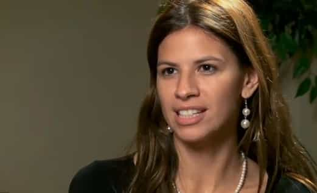

< < < Back
How False Accuser Michelle Fields Tried To Bring Down Donald Trump—And Failed – Return Of Kings
The news just keeps on getting better for Donald Trump. Buoyed by his huge win in the New York primary—as well as polls showing him leading in the primaries taking place next week—the Trump campaign got another boost last week when charges were dropped against manager Corey Lewandowski. Lewandowski had been arrested for simple battery after he grabbed the arm of Breitbart reporter Michelle Fields when she tried to approach Trump at a rally in Jupiter, Florida last month. In her own words:
Trump acknowledged the question, but before he could answer I was jolted backwards. Someone had grabbed me tightly by the arm and yanked me down. I almost fell to the ground, but was able to maintain my balance. Nonetheless, I was shaken.
Even by normal Trump Derangement Syndrome standards, Fields’ false accusation—derisively called “GrabGate”—sent both leftists and cuckservatives into a tizzy. Both used the alleged incident to claim that Trump is a misogynist who was encouraging violence at his rallies. Media outlets from the Washington Post to the Daily Caller were in on the hoax, raging manlet Ben Shapiro resigned his position at Breitbart so he could white-knight for Fields, and a group of female conservative “journalists” even tried to use their gender to shame Trump into firing Lewandowski.
With the charges against Lewandowski dropped, Trump’s actions have been vindicated and then some. Between both this and his massive victory in New York, Trump is well-positioned to secure the delegates he needs to clinch the Republican nomination.
Michelle Fields, Professional Attention Whore
View post on imgur.com
The media jackals who rushed to feast on Michelle Fields’ attention-grabbing stunts failed to look into her background. Fields has a history of attention-whoring and making false accusations against men of various kinds. Among other things, she once falsely accused journalist Chuck Johnson of hacking her computer, falsely accused former Congressman Allen West of sexually assaulting her, and falsely accused NYPD officers of attacking her with batons during an #OccupyWallStreet protest. Her mother is also a pro-amnesty activist who opposes Donald Trump for his anti-illegal immigration policies.
In the days after her initial accusation, Fields changed her story multiple times, the Washington Post actively colluded with her, and reports surfaced that she had defied Secret Service in trying to pursue Trump. When Lewandowski was arrested for battery, independent journalists noted that Palm Beach County’s district attorney—responsible for bringing charges against him—was a major Hillary Clinton supporter and thus had a political motivation to prosecute him.
At the time of Lewandowski’s arrest, Trump refused to fire him, stating that he was loyal to his employees and didn’t want to ruin Lewandowski’s life over what he believed were trumped-up charges. While Trump was initially slammed for his decision, with the charges against Lewandowski now dropped, he’s scored a two-fer: he’s shown that he’s a man of character who will defend his people and not throw them to the lions, and he’s also shown how the Michelle Fields case was a blatant attempt to derail his campaign.
The Empire State Is Trump Country

While most political analysts assumed that Trump would win his home state of New York, his crushing victory—winning 61 percent of the vote and taking all but five delegates—is still a massive boon for his campaign. Trump not only won the statewide vote, he won all but one of the state’s congressional districts (New York parcels out its delegates according to the winner of each district) and broke 50% of the vote in all but four of them.
While Ted Cruz had been trying to position himself as the #NeverTrump candidate after his Wisconsin win, he was completely routed in New York, coming in a distant third and getting no delegates. John Kasich was able to snatch a few delegates away from Trump, but not enough to matter: he still has fewer delegates than Marco Rubio, who dropped out of the race a month ago. Additionally, Trump’s margin of victory in his home state is far larger than Cruz’s or Kasich’s in theirs.
It’s too early to call the race yet, but Trump’s blowout win in New York combined with the implosion of Michelle Fields means that his campaign isn’t dead yet. While there’s still time for the GOP establishment to stop the Trump Train, it’s going to take a lot more effort on their behalf.
Read More: Did The Anti-Donald Trump Riot In Chicago Help Trump Cruise To Victory On Tuesday?